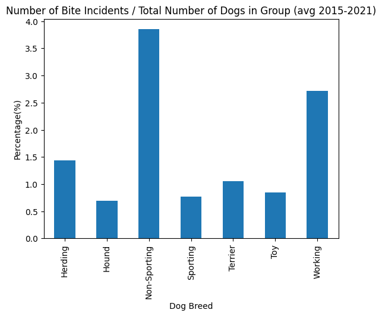
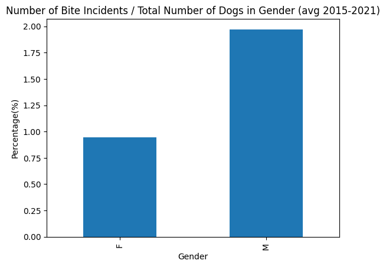
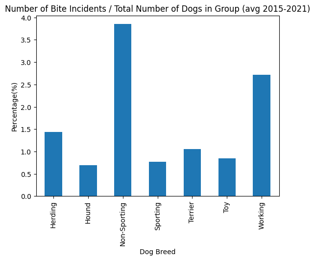
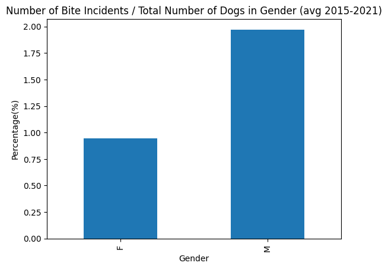
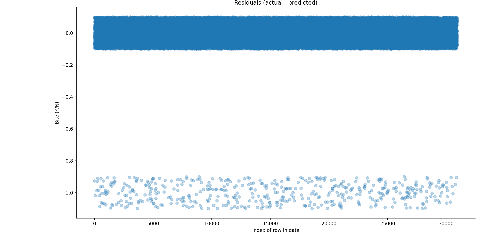
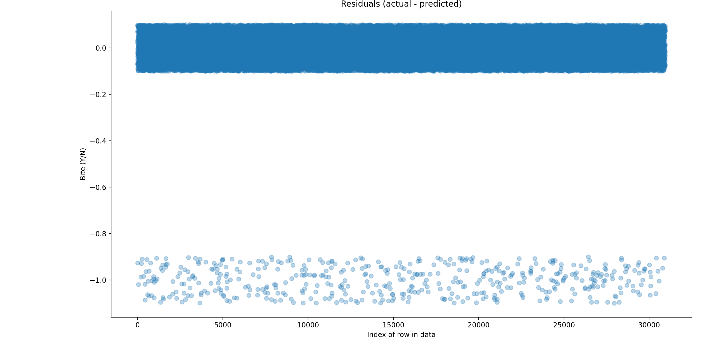

All Bite and No Bark - Predicting the Probability of Getting Bitten by a Random Dog
Overview
This project attempts to answer a rather frivolous question: if I cross paths with a dog on the street, can I predict with any certainty the
probability that I will get bitten based on what I can see about the dog? In other words, if I see a chihuahua coming towards me, would I be
justified in crossing the street even if this may hurt the dog's feelings or should I continue along my intended path and risk the integrity of
my ankles? This attempt is supported by two dog-related datasets obtained from NYC OpenData, on which data cleaning, visualization, and predictive
modeling techniques were applied.
The Data
The first data set used is
NYC-Dog-Licensing-Dataset, which contains data on all
dog licenses in NYC from 2015 to 2021. As all dog owners are required by law to maintain up-to-date licenses on their dogs, this dataset contains
a large amount of information on the city's canine residents, including name, gender, breed, owner's borough and zip code, and the issue/expiration
dates of each license.
The second dataset is DOHMH-Dog-Bite-Data, which contains data
on all reported incidents of dog bites in NYC from 2015 to 2021. The information contained in this dataset include the date and location of each
reported incident, along with the breed, age, and gender of the offending dog.
Cleaning the Data
Before the data could be used, it needed to be cleaned up and organized. The biggest obstacle to this was the fact that the datasets contained
hundreds of different dog breeds, many of which appeared to be simply variations of the same breed, such as Labrador Retrievers, Labrador
Retriever Crossbreeds, Standard Poodles, Miniature Poodles, and French Bulldogs (which were a different entry than Bull Dog, French and also not
to be confused with Bull Dog, English or with just plain BullDog). To try and wrangle this chaos into a more workable form, I took the advice of
one Susan Sun and looked into the different dog classifications put forth by the American Kennel Club, which can be found
here.
The AKC groups about 200 different dog breeds into one of 7 groups: Working, Herding, Sporting, Hound, Terrier, Toy, and Non-Sporting. Using this,
a dataset was created containing all these breeds (call it Dog_Groups.csv) with each column in the dataset representing a different dog group.
Using Python, every entry in the two NYC OpenData datasets was iterated through and matched with a breed from the Dog_Groups dataset. Entries
without a matching Dog Group were dropped from the datasets.
The NYC-Dog-Licensing-Dataset was also organized according to each license's issuance and expiration date. It was assumed that if a dog license
was valid from say, 2015-2017, then that particular dog existed from 2015 to 2017. Therefore, for example, if we counted the number of licenses
that were valid in 2016, we could get the total number of dogs that resided in NYC in 2016. In addition, it was assumed that a dog owner would
only renew their license after the expiration date i.e. no double counting of the licenses in any particular year would occur. From this, we
could get the average number of dogs in the city per year. Similarly, the DOHMH-Dog-Bite-Data dataset was organized according to the dates of
each incident. From this, we can determine the number of incidents in any particular year from 2015-2021 as well as the average number of
incidents per year.
Finally, it was noted that the DOHMH-Dog-Bite-Data dataset contained rows with missing zip code and gender values. Fortunately, rows with missing
zip codes for the most part still contained the borough that the incident occurred in. Similarly, rows with missing genders still contained the
breed of the dog involved in the incident. To fill in the missing zip codes, the dataset was grouped by borough and the number of times each zip
code appeared in each borough was counted. The rows with missing zip codes were then randomly assigned a zip code from their corresponding borough,
with the probability of each zip code determined by the number of times it appeared in the original dataset. For example, if the data showed that
50% of all Brooklyn incidents occured in zip code 11237 and we found an incident that occurred in Brooklyn that was missing a zip code, then we
would have a 50% chance of assigning zip code 11237 to that incident. Similarly, to fill in missing gender information, we grouped the dataset
by Dog Group and found the proportion of males to females in that group, then assigned the missing gender based on that proportion. For example,
if proportion of males to females in the Herding Group was 55:45, and we found an incident that involved a dog in the Herding Group that was
missing a gender, then there would be a 55% chance of assigning male and a 45% chance of assigning female to that incident.
Initial Visualizations
Choropleth Maps
Because both datasets contain zip code information, they lend themselves nicely to a choropleth maps. In particular, we can map out the locations
where dog owners tend to live and the locations where dog bites tend to happen. To do this, we first filter out invalid zip code entries (valid NYC
zip codes are between 10001 and 11697 so any zip codes outside this range were filtered out). To create the choropleth map illustrating the number
of dog licenses by zip code, we then group the NYC-Dog-Licensing-Dataset by Zip Code, counted the number of licenses that were valid in each
year from 2015 to 2021, and found the average number of valid licenses per year for each zip code. A choropleth map was created using Python's Folium
library to map the average number of licenses per year onto a GeoJSON map of NYC (GeoJSON file can be found
here). The Folium map can be
seen below while an interactive version of the map can be found
here. As we can see, the Upper West Side, Chelsea, and Alphabet City in Manhattan tend to have the most
dog owners, along with Brooklyn Heights and Park Slope in Brooklyn. Black areas are those with no dog licenses, which are exclusively areas with no
residents such as airports and Central Park.

To create the choropleth map illustrating the number of dog bite incidents by zip code, we grouped the DOHMH-Dog-Bite-Data dataset by Zip Code,
counted the number of incidents in each year from 2015 to 2021, and found the average number of incidents per year for each zip code. A choropleth
map was created using Python's Folium library to map the average number of licenses per year onto a GeoJSON map of NYC. The Folium map can be
seen below while an interactive version of the map can be found here. Interestingly, the neighborhoods with
the most dog incidents are East Harlem and Upper East Side in Manhattan, Corona in Queens, and a sizable portion of Staten Island. There seems to be
little correlation between the number of dog owners and the number of dog bite incidents in an area. However, we note that the areas mentioned above
with the highest numbers of incidents are all close to large, popular parks (Central Park in Manhattan, Flushing Meadows Corona Park in Queens, and
Freshkills Park, La Tourette Park, and Willowbrook Park in Staten Island). Absent any other information, one explanation may be that the incident
rates are higher in these areas because owners like to bring their dogs there. The average number of dogs in these areas may actually be much higher
than the number of licensed dogs living in these areas would suggest and more dogs would naturally result in more incidents.

Bar Graphs
After cleaning up and organizing the data, initial visualizations were created. The two cleaned datasets were grouped by Dog Group and Gender and
merged into one dataset using Dog Group and Gender as keys. A new column was created to calculate the average yearly percentage of each dog group
that would be involved in an indident. This percentage was plotted as a bar graph using Python's Matplotlib.pyplot library. The bar graph is shown
below. At a glance, there appears to be some correlation between an individual's Dog Group classification and propensity to bite. For example, on
average, 3.85% of the total Non-Sporting population is involved in a bite incident every year. By comparison, only 0.7% of the total Hound
population is involved in a bite incident on average every year.

Another column was created in the merged dataset to calculate the average yearly percentage of each dog gender that would be involved in an indident.
This percentage was plotted as a bar graph (again, using Python's Matplotlib.pyplot libary), shown below. At a glance, there also appears to be some
correlation between an individual's gender and propensity to bite. On average, 0.94% of the total female dog population is involved in a bite incident
every year, while 1.97% of the total male dog population is involved, over twice the percentage of females.

Because both datasets contain zip code information, they lend themselves nicely to a choropleth maps. In particular, we can map out the locations where dog owners tend to live and the locations where dog bites tend to happen. To do this, we first filter out invalid zip code entries (valid NYC zip codes are between 10001 and 11697 so any zip codes outside this range were filtered out). To create the choropleth map illustrating the number of dog licenses by zip code, we then group the NYC-Dog-Licensing-Dataset by Zip Code, counted the number of licenses that were valid in each year from 2015 to 2021, and found the average number of valid licenses per year for each zip code. A choropleth map was created using Python's Folium library to map the average number of licenses per year onto a GeoJSON map of NYC (GeoJSON file can be found here). The Folium map can be seen below while an interactive version of the map can be found here. As we can see, the Upper West Side, Chelsea, and Alphabet City in Manhattan tend to have the most dog owners, along with Brooklyn Heights and Park Slope in Brooklyn. Black areas are those with no dog licenses, which are exclusively areas with no residents such as airports and Central Park.
To create the choropleth map illustrating the number of dog bite incidents by zip code, we grouped the DOHMH-Dog-Bite-Data dataset by Zip Code, counted the number of incidents in each year from 2015 to 2021, and found the average number of incidents per year for each zip code. A choropleth map was created using Python's Folium library to map the average number of licenses per year onto a GeoJSON map of NYC. The Folium map can be seen below while an interactive version of the map can be found here. Interestingly, the neighborhoods with the most dog incidents are East Harlem and Upper East Side in Manhattan, Corona in Queens, and a sizable portion of Staten Island. There seems to be little correlation between the number of dog owners and the number of dog bite incidents in an area. However, we note that the areas mentioned above with the highest numbers of incidents are all close to large, popular parks (Central Park in Manhattan, Flushing Meadows Corona Park in Queens, and Freshkills Park, La Tourette Park, and Willowbrook Park in Staten Island). Absent any other information, one explanation may be that the incident rates are higher in these areas because owners like to bring their dogs there. The average number of dogs in these areas may actually be much higher than the number of licensed dogs living in these areas would suggest and more dogs would naturally result in more incidents.
After cleaning up and organizing the data, initial visualizations were created. The two cleaned datasets were grouped by Dog Group and Gender and merged into one dataset using Dog Group and Gender as keys. A new column was created to calculate the average yearly percentage of each dog group that would be involved in an indident. This percentage was plotted as a bar graph using Python's Matplotlib.pyplot library. The bar graph is shown below. At a glance, there appears to be some correlation between an individual's Dog Group classification and propensity to bite. For example, on average, 3.85% of the total Non-Sporting population is involved in a bite incident every year. By comparison, only 0.7% of the total Hound population is involved in a bite incident on average every year.

Another column was created in the merged dataset to calculate the average yearly percentage of each dog gender that would be involved in an indident. This percentage was plotted as a bar graph (again, using Python's Matplotlib.pyplot libary), shown below. At a glance, there also appears to be some correlation between an individual's gender and propensity to bite. On average, 0.94% of the total female dog population is involved in a bite incident every year, while 1.97% of the total male dog population is involved, over twice the percentage of females.

Predictive Model
Logistic Regression
From the bar graphs, we can see that there may be some correlation between a dog's group classification and gender, and its likelihood to bite. To
try and quantity what this probability may be, we first extracted the average number of dog licenses and bite incidents for each dog group
classification and gender. We employed a logistic regression model on this datausing Python's sklean library. A logistic regression model
was chosen because the dependent variable here has a binary outcome (either a dog will bite or it won't). The independent variables in the model
will be the Dog Group classification and gender of the dogs. Because these are categorical variables, the data was first one-hot encoded using the
Python Pandas library. The dataset was then exploded in the following way: if the data showed that there were on average 5560 female Herding dogs
every year, then that entry in the dataset was exploded to create 5560 entries, each of which represented a single dog. If the data showed that on
average there were 50 bite incidents per year involving female Herding dogs, then 50 of the previous 5560 entries were chosen to represent dogs that
had an incident. This was done by creating a new column containing either 0 for no incident or 1 for an incident. This process was repeated for every
dog group and gender in the dataset.
The datasest was split using the train_test_split function from the sklearn.model_selection library. 80% of the dataset was used to train the Logistic
Regression model while 20% was reserved for testing. The trained model was then used to predict outcomes using the testing data. The predicted results
were compared against the actual results. Since the predicted and results were simply 0 or 1, the difference between them were calculated. Correctly
predicted results would result in a difference of 0, while incorrectly predicted results would result in a difference of 1 or -1. This difference was
plotted against the row number of the dataset that the predicted result originated from. The resulting graph is shown below.

The model returns the following equation and coefficients:
From the bar graphs, we can see that there may be some correlation between a dog's group classification and gender, and its likelihood to bite. To try and quantity what this probability may be, we first extracted the average number of dog licenses and bite incidents for each dog group classification and gender. We employed a logistic regression model on this datausing Python's sklean library. A logistic regression model was chosen because the dependent variable here has a binary outcome (either a dog will bite or it won't). The independent variables in the model will be the Dog Group classification and gender of the dogs. Because these are categorical variables, the data was first one-hot encoded using the Python Pandas library. The dataset was then exploded in the following way: if the data showed that there were on average 5560 female Herding dogs every year, then that entry in the dataset was exploded to create 5560 entries, each of which represented a single dog. If the data showed that on average there were 50 bite incidents per year involving female Herding dogs, then 50 of the previous 5560 entries were chosen to represent dogs that had an incident. This was done by creating a new column containing either 0 for no incident or 1 for an incident. This process was repeated for every dog group and gender in the dataset.
The datasest was split using the train_test_split function from the sklearn.model_selection library. 80% of the dataset was used to train the Logistic Regression model while 20% was reserved for testing. The trained model was then used to predict outcomes using the testing data. The predicted results were compared against the actual results. Since the predicted and results were simply 0 or 1, the difference between them were calculated. Correctly predicted results would result in a difference of 0, while incorrectly predicted results would result in a difference of 1 or -1. This difference was plotted against the row number of the dataset that the predicted result originated from. The resulting graph is shown below.

The model returns the following equation and coefficients:
Outcome = 0.0903(Herding) - 0.6041(Hound) + 1.089(Non-Sporting) - 0.6026(Sporting) - 0.2735(Terrier) - 0.4766(Toy) + 0.7768(Working) - 0.3635(Female) + 0.3631(Male)